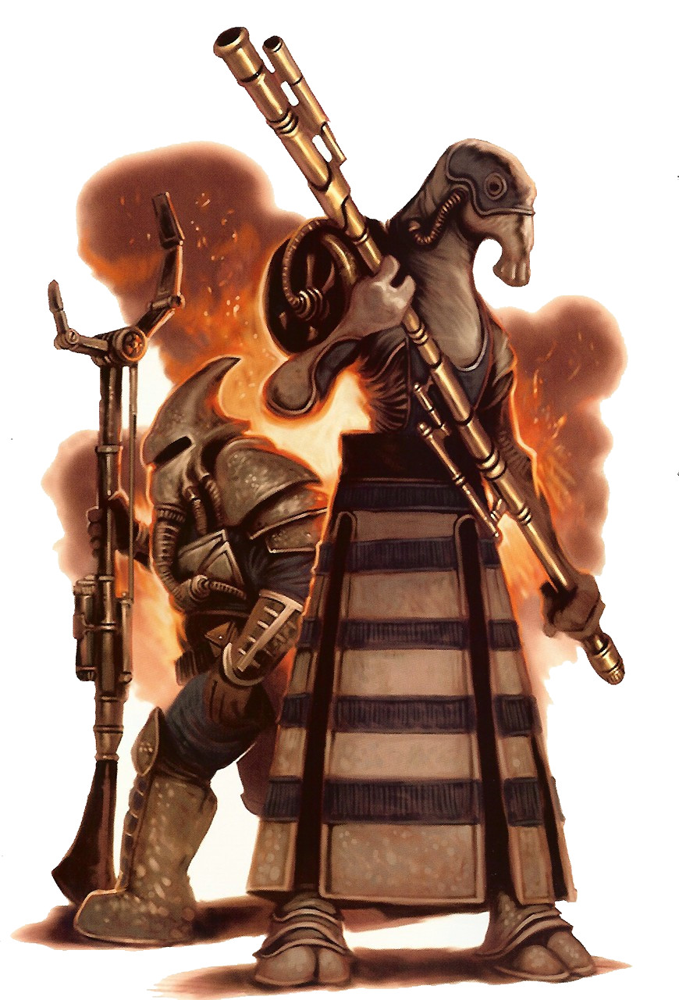

Mustafarian
mustafarian
Special Abilities: Each Mustafarian subspecies has its own special abilities, listed below.
Northern Mustafarian
Tall and spindly, many northern Mustafarians can be found working alongside their southern cousins in Mustafar’s many mining facilities. Though they are typically not as sturdy as southern Mustafarians, their faceted eyes are quite keen, helping them to pick out flaws in ore and machines alike.
Special Abilities: Northern Mustafarians may remove from checks to resist arid or hot environmental conditions. Additionally, they begin play with one rank in the Eye for Detail talent .
Southern Mustafarian
Bulkier and tougher than their northern cousins thanks to their adaptation to relatively higher gravity in their homeland, southern Mustafarians do a great deal of the grunt work in Mustafar’s mining facilities. Their thick carapaces makes them difficult to harm and help them survive the incredible heat and frequent accidents on the lava flows.
Special Abilities: Southern Mustafarians may remove from checks to resist arid or hot environmental conditions. Additionally, they begin play with one rank of the Enduring talent .
The perpetually volcanic, burning world of Mustafar seems an unlikely place for anything to thrive, let alone a sentient species. Mustafar once teemed with life, like so many terrestrial worlds, until the planet’s orbit changed dramatically. Ancient legends claim a mythical, ruinous weapon shifted the orbit of the nearby gas giant Lefrani. This epic cataclysm sent Mustafar into an unusual and gravitationally crushing alignment between Lefrani and another nearby gas giant, Jestefad. Very few species survived the resulting volcanic cataclysm. Forced to areas in the north and near the equatorial regions of the world, the remaining Mustafarians adapted and evolved to their new realities. The northern Mustafarians became tall and thin, while those near the equator became shorter, but stronger and stouter. Of course, these ancient tales can hardly be confirmed with any certainty; what is clear is that Mustafar is an extreme environment, and the species that shares its name with the world has adapted to its harsh climes.
The Mustafarians themselves aren’t overly aggressive, so instead of allowing pointless tribalism to rule, the two groups usually work together to harvest their world’s meager resources. Development picked up as off-worlders took a greater interest in the world’s particular commodities. The Mustafarians greatly benefited from the introduction of higher technology. Mustafarians seem to have a natural affinity for technology, and they strive to advance it to help them survive more easily. No matter how durable imported technology seems to be, Mustafarians have learned from tragic experience never to really trust it until they have a chance to modify and further harden it against the blast furnace that is their harsh environment.
Though infighting between Mustafarian groups is uncommon, highly aggressive creatures are a great hazard on the world, thanks to competition over scarce resources. As they and most of Mustafar’s native creatures are highly resistant to heat, the Mustafarians have developed their own weaponry for defending themselves. Many use kinetic or concussive technology in lieu of more common energy weapons. Mustafarian sentries and combatants regularly wield their specialized gear, whether working the mines or patrolling on their massive lava fleas. Even Mustafarian melee weapons are heavier and more durable compared to their off-world counterparts.
The two kinds of Mustafarians are genetically similar, but have developed differently over the innumerable generations since the ancient cataclysm. The taller northern Mustafarians are more vulnerable to damage. Thus, stouter southern Mustafarians more often take on the harsher work, such as labouring in the Mining Guild’s lava extraction operations.
Mustafarians are arthropods, with a tough exoskeleton over leathery skin. They are bipedal and somewhat humanoid. They have long snouts and large eyes on either side of their heads. Even unprotected, Mustafarians can naturally withstand far more heat than most species. Though many of their adaptations came about to help them survive the heat, Mustafarians still wear armor and heavy environmental protection gear when outside of their underground shelters. They have a limited capability to survive on the surface without survival gear, but rarely put this durability to the test.
Workers and travelers who spend extended amounts of time outside typically wear breath masks to further protect themselves from the noxious fumes that can sometimes flood the surface due to sudden eruptions or shifts in the blasting wind. A significant percentage of the population opts to install cybernetics to aid in certain tasks and improve their likelihood of survival. Such enhancements are helpful but not usually extravagant. They tend to complement the Mustafarians’ natural abilities, rather than replace them wholesale. However, severely injured Mustafarians who require replacement limbs or organs often have no qualms about gaining an advantage from their otherwise unfortunate situation. They are only limited by what they can afford, which can be a significant hindrance.
Living on a world that demands so much effort just to stay alive has made the Mustafarians insular and disinterested in galactic affairs. Their focus on advancement and survival of their species overrides other concerns, and many regard off-worlders with little curiosity. They are politically organized in accordance with the caverns and communities they inhabit. While the two subspecies live together as needed, the geographical distance and limited desirable living space tends to keep them in their own communities. There is little in the way of central government, but some of the most trusted leaders are allowed to cut deals with off-worlders. These deals almost always help ensure Mustafarian survival and quality of life.
Such thinking led them to fall under the sway of the Techno Union before and during the Clone Wars. After the Separatist defeat and the rise of the Empire, the Mining Guild took over much of the heavy industry and lava skimming that the Techno Union had started. So long as it helps their cause, Mustafarians are generally willing to tolerate a degree of outside political interference.
Mustafar is a hot, volcanic planet with constant eruptions and massive rivers of lava that cut across the landscape. The Mustafarians find relief and shelter in natural caverns and abandoned mines. They build outdoor structures when necessary, such as the saucershaped buildings at and near active mining sites. Mustafarian structures are strongly reinforced and armored against natural calamities, making the larger facilities on Mustafar decidedly fortresslike in construction and durability.
There is comparatively little life on Mustafar’s surface, and not much more underground. The northern Mustafarians use large insect creatures called lava fleas to move rapidly on the surface in great leaps and bounds. Underground, Mustafarians hunt strong, hardshelled, burrowing quadruped creatures called krishels through labyrinths of seemingly never-ending caverns and tunnels. Mustafarians cultivate few crops, lacking the water to support traditional farms, even underground. Various types of edible fungi and domesticated herds of large insectoid creatures make up much of the Mustafarian diet. Despite these challenges, Mustafar is largely self-sufficient in regards to its food supply, unlike many other hotbeds of industry across the galaxy.
Mustafarians have their own language, which has developed very precise ways to express concepts relating to the natural features above and below ground, especially those phenomena that are deceptively dangerous. The Mustafarian subspecies have different dialects, but though some terms and cultural concepts also differ, any two individuals can communicate on a functional level.
Mustafarians are capable of speaking Basic and other common galactic languages, but other than the ones who work in the Mining Guild operations and deal with outsiders by necessity, most do not bother to learn Basic. Mustafarians who live or travel off-world almost always speak Basic and sometimes the language of their trading partners. Given their history with the Techno Union, they are more likely to know languages regularly used among the former Separatist worlds.
Most Mustafarians’ lack of interest in the galaxy means they are disinclined to leave their homeworld. Business pursuits and trade negotiations do drive some Mustafarians to leave their world. Mustafarian merchants and Mining Guild personnel make regular trips to trade for upgrades in protective technology and equipment, as well as to deliver ore to buyers.
Some Mustafarians seek full-time employment off-world in the ranks of corporations, criminal syndicates, and trade rings. Given their cultural focus on survival against a harsh universe, many Mustafarians have few qualms taking on work that most members of many other species would find overly risky, unethical, or unfathomably boring. Mustafarians find most inhabited worlds cold, but relish the relative safety.
Centuries before the Clone Wars, the Techno Union made deals with the Mustafarians to skim valuable elements out of the lava streams, undertake mining operations, and introduce some heavy industry. The Mustafarians eagerly agreed in exchange for access to mining droids and heavy-duty speeders. The Separatists used the world to manufacture droid armies and as a fortified retreat for their leaders. Until the very last days of the Clone Wars, fighting largely passed the planet by, aside from skirmishes and lesser operations. Leaders of the secretive criminal syndicate known as Black Sun regularly met on the world. They had many holdings, but since most of their operations were elsewhere in the galaxy, the Mustafarians cared little, when they noticed at all.
The Mustafarians were never fanatically committed to the Separatist cause, having joined to secure contracts in the first place, and thus continued life much as they had before, even when the Separatist Council was finally eliminated on Mustafar at the end of the Clone Wars. While stories circulate among the Mustafarians from time to time about a great Jedi duel on their world, there is little to lend credence to these tales. Even if there was evidence, the Mustafarians would be unlikely to speak of it, as the Empire maintains a considerable presence above Mustafar. Few Mustafarians know the true, sinister purpose of the Imperial presence on their world, and the wise do not inquire about such things, or of the stories of Force sensitives sent to a fiery grave on Mustafar.